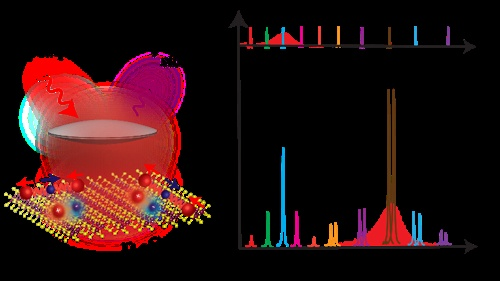
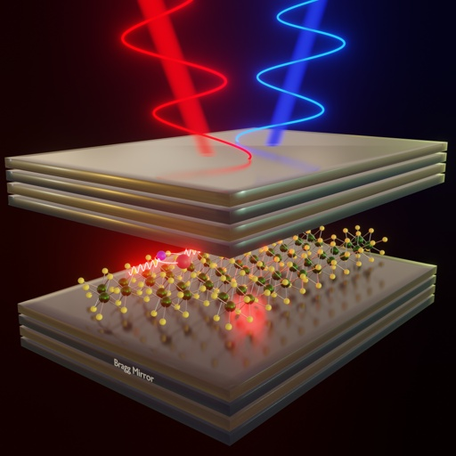
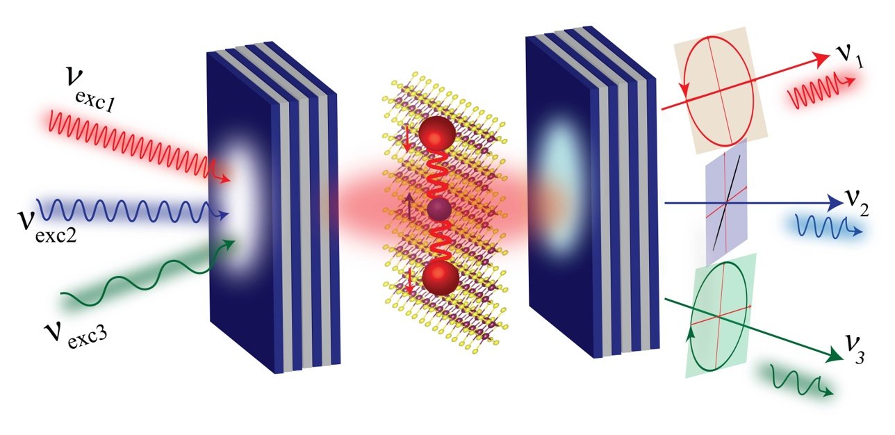

Blog & Activities
Published-paper highlights, research updates, lab activities, academic notes, outreach, and professional milestones.
Research Updates
Published Papers
Lab Activities
Outreach
Conferences
Project Notes
Background: Excitons and Exciton–Polaritons
When light falls on a semiconductor, it can give energy to an electron and lift it to a higher
energy state. After the electron moves, it leaves behind an empty state called a hole. The electron
has negative charge, while the hole behaves like a positive charge. Because opposite charges attract,
the electron and hole can remain bound together. This bound electron–hole pair is called an
exciton.
Excitons play an important role in semiconductors and two-dimensional materials because they strongly
influence how the material absorbs light, emits light, and interacts with crystal vibrations. In
anisotropic materials such as ReS2, excitons are especially interesting because their optical
response depends strongly on direction and polarization.
When a two-dimensional material is placed inside an optical microcavity, light can be trapped between
the cavity mirrors. If the interaction between the trapped cavity photon and the exciton becomes strong
enough, they no longer behave as separate light and matter excitations. Instead, they mix together and
form a new hybrid quasiparticle called an exciton–polariton.
An exciton–polariton has both light-like and matter-like properties. Because of this hybrid nature,
exciton–polaritons are useful for controlling light–matter interaction and for exploring phenomena
such as room-temperature Bose–Einstein condensation, quantum simulators, non-Hermitian systems,
nonlinear optics, and future photonic devices.
Recent Activities
Published Paper | ACS Photonics, 2025
Giant Resonance Raman Scattering in ReS2

Figure: Add an image related to this work.
In this work, we studied how anisotropic excitons in ReS2 can strongly enhance Raman scattering.
ReS2 is a low-symmetry two-dimensional material, and its excitonic transitions are strongly
polarization dependent. This makes it an interesting platform for studying how crystal anisotropy controls
light–matter interaction.
The main idea was to understand how Raman modes behave when the excitation laser is tuned close to
excitonic resonances. We observed a giant enhancement of Raman scattering mediated by anisotropic excitons.
The enhancement was not only dependent on excitation energy, but also strongly connected to the polarization
direction of light with respect to the crystal axes of ReS2.
Category: Published paper / Raman spectroscopy / 2D materials
Published Paper | Physical Review B, 2025
Zero-Threshold Polariton-Raman Laser

Figure: Add an image related to this work.
This work explored Raman scattering in a strongly coupled ReS2 microcavity system. In a
microcavity, photons can strongly interact with excitons in a material and form hybrid light–matter states
known as exciton–polaritons. These polaritons can strongly modify how light is emitted and scattered from
the system.
In this study, we investigated a polariton-assisted Raman process in an anisotropic microcavity. The key
observation was a zero-threshold-like Raman lasing behavior, where the Raman signal could be strongly
enhanced through polariton states. The system also showed features connected to non-Hermitian and
PT-symmetric physics, making it interesting from both a fundamental and device-oriented point of view.
Category: Published paper / exciton–polaritons / quantum photonics
Published Paper | Physical Review B, 2026
Tunable Raman Polarization in Anisotropic Microcavity Polaritons

Figure: Add an image related to this work.
In this work, we studied how the polarization of Raman-scattered light can be continuously tuned using an
anisotropic ReS2 microcavity. ReS2 has two strongly polarized excitonic transitions
along different crystal directions. When such an anisotropic material is placed inside an optical microcavity,
the excitons and cavity photons form polariton states with strong polarization-dependent properties.
The central result was that the polarization state of Raman emission could be controlled by changing the
excitation condition. By tuning the excitation energy and pump polarization, we could modify the relative
contribution of different polariton pathways and thereby tune the Raman polarization. This shows that Raman
polarization is not fixed only by material symmetry; it can also be engineered through the cavity and
polariton structure.
Category: Published paper / polaritonics / polarization control